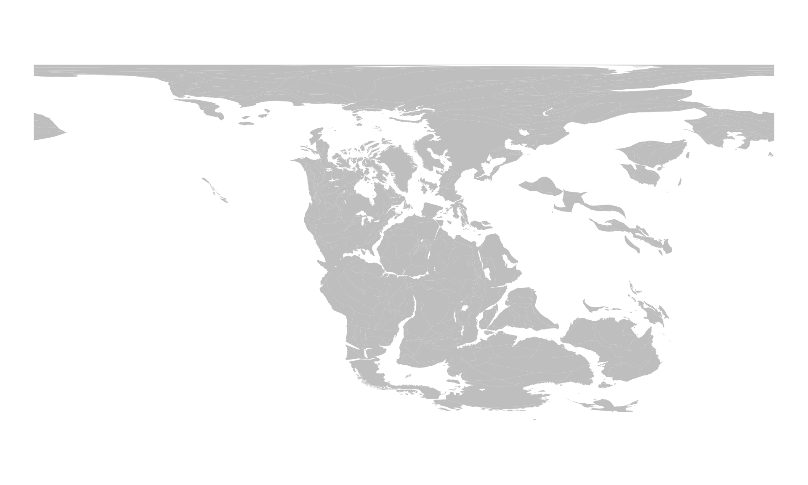
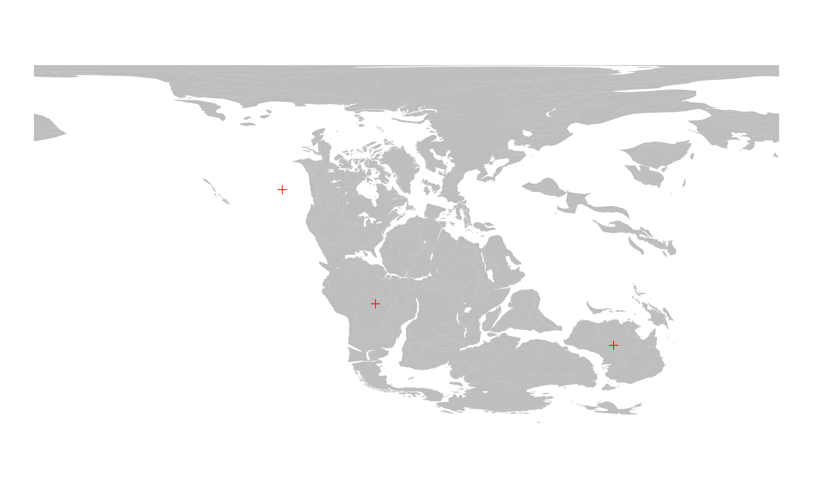
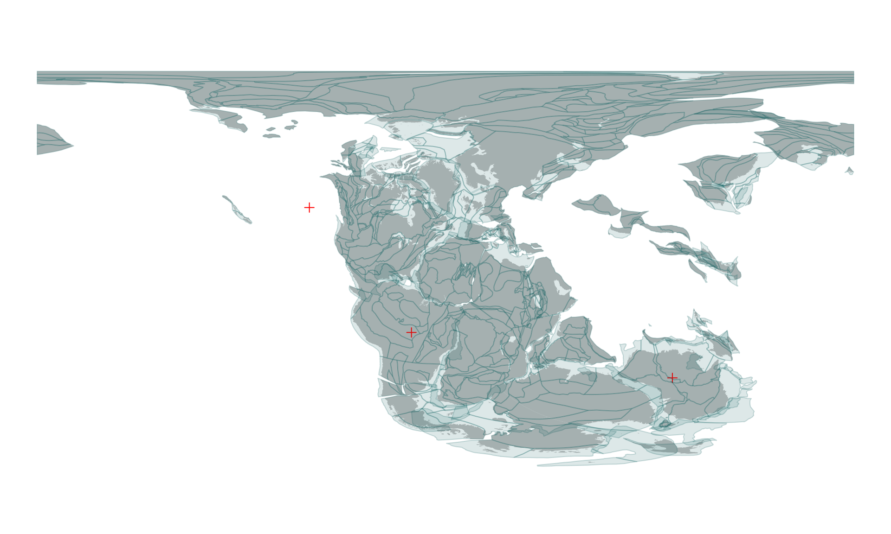
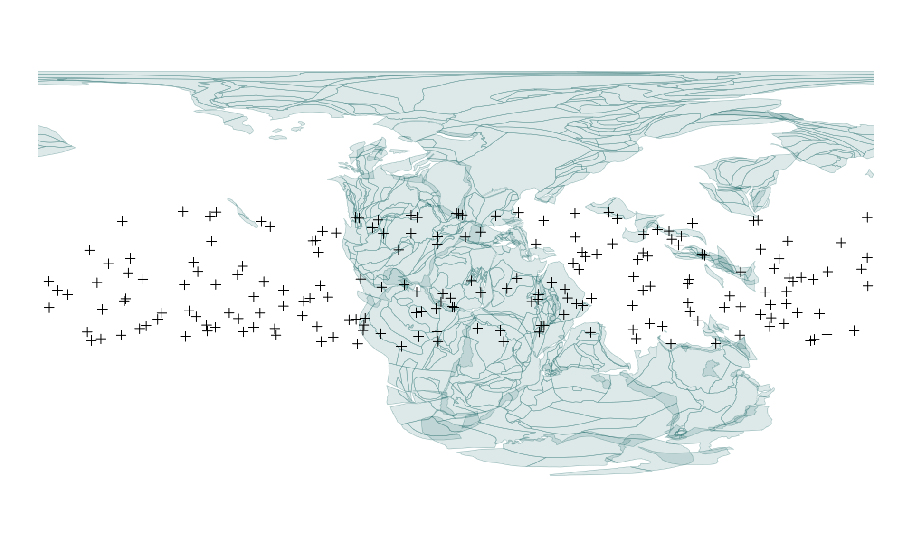
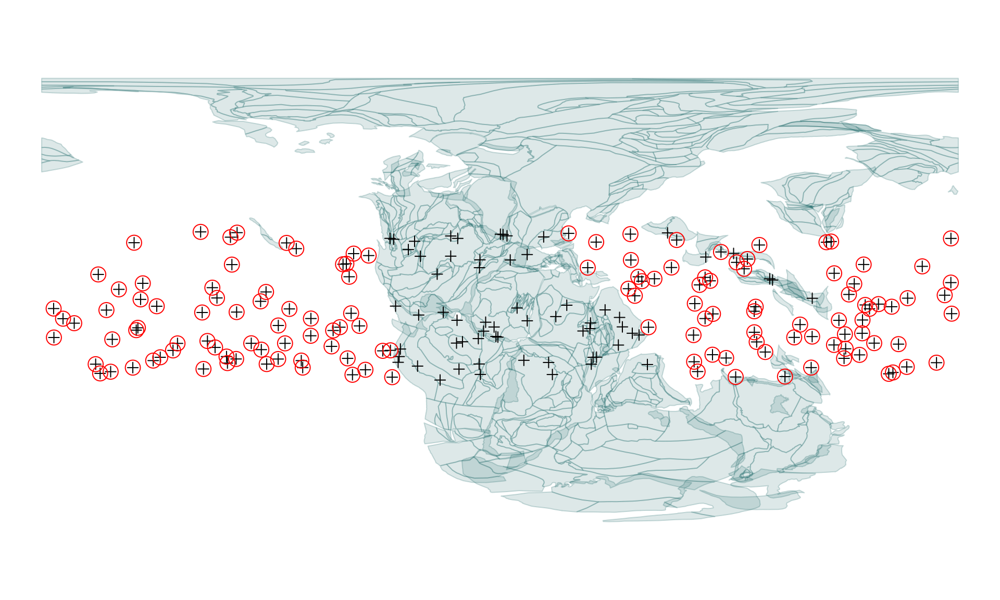
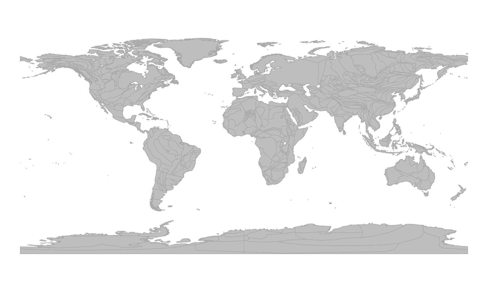
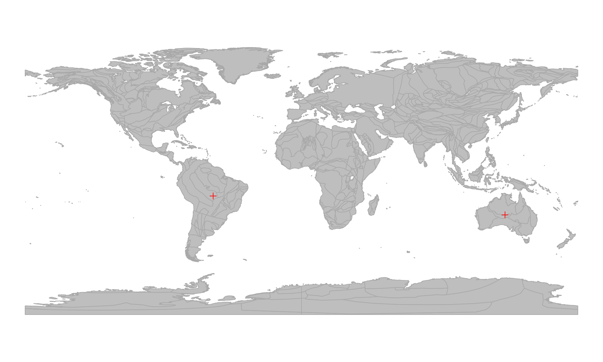
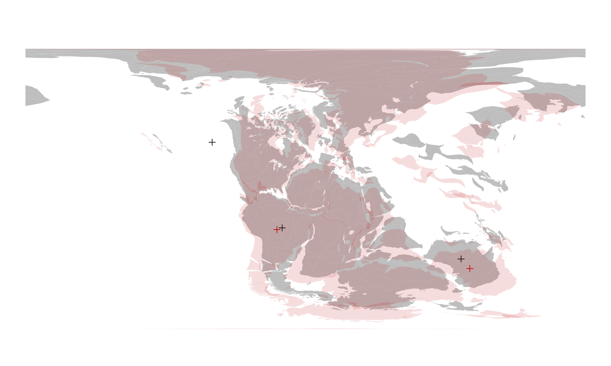
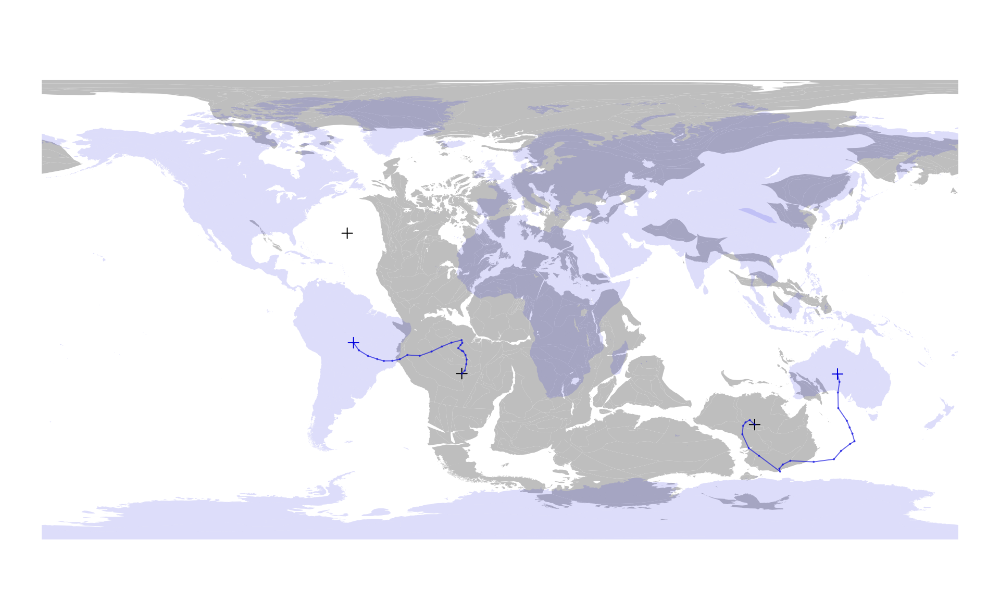

3. Reconstructions based on given paleocoordinates (online)
Source:vignettes/3_online_reconstrution_forward.Rmd
3_online_reconstrution_forward.RmdThe GPlates Web Service (GWS) (online) implements reverse reconstruction: rather than calculating the paleocoordinates of present-day positions given an age and a model, you can calculate the present-day positions of paleocoordinates.
Present-day positions of paleocoordinates
Let’s work with the Triassic (at 220Ma) using the default
"MERDITH2021" model! We can reconstruct the positions of
present-day coastlines as we saw earlier
coast220 <- reconstruct("coastlines", age=220)
coast220
#> Simple feature collection with 2219 features and 0 fields
#> Geometry type: POLYGON
#> Dimension: XY
#> Bounding box: xmin: -179.99 ymin: -82.3516 xmax: 179.99 ymax: 89.99
#> Geodetic CRS: WGS 84
#> First 10 features:
#> geometry
#> 1 POLYGON ((164.7667 58.5746,...
#> 2 POLYGON ((171.5001 53.1643,...
#> 3 POLYGON ((162.0057 55.6797,...
#> 4 POLYGON ((160.0406 54.5613,...
#> 5 POLYGON ((162.1421 56.2415,...
#> 6 POLYGON ((174.0752 53.7632,...
#> 7 POLYGON ((162.533 56.3312, ...
#> 8 POLYGON ((161.9085 56.184, ...
#> 9 POLYGON ((158.8934 55.3449,...
#> 10 POLYGON ((158.0967 55.2248,...We can also plot this the same way:
# the background map
plot(coast220$geometry, col="gray", border=NA)
Working with this reconstruction often involves defining points in this paleocoordinate system: either because they represent notable geographic positions, or they are results of geometric transformations.
# the coordinates
one <- c(-15, -25)
two <- c(100, -45)
three <- c(-60, 30)
# make it a matrix
posMat <- rbind(one, two, three)
# add column names (optional)
colnames(posMat) <- c("paleolong", "paleolat")
posMat
#> paleolong paleolat
#> one -15 -25
#> two 100 -45
#> three -60 30Since the map above is using the WGS84 Coordinate
Reference System (CRS), we can visualize the positions with
points():
points(posMat, col="red", pch=3)
You can calculate the present-day positions of these points with the
reconstruct() function - you only have to indicate that the
coordinates are from a given age, in our case
220Ma:
presentPoints <- reconstruct(posMat, from=220)
#> Warning in gwsReconstructPoints(coords = x[bPresent, , drop = FALSE], time = from, : Identical coordinates returned as present-day positions (4 digits):
#> - Some points are probably off the partitioning polygons.
#> - Returning NAs for these.Note the warning message! This reads a bit technical, but the key bit
here is the first bullet point: Some points are probably off the
partitioning polygons. This simply means that calculating the
present-day positions is simply not possible because the
paleocoordinates cannot be assigned to any of the plates that are
present in the model at the time indicated by the from
argument. These points are indicated with missing values
(NAs`) in the returned object of present-day
coordinates.
presentPoints
#> long lat
#> one -57.5362 -12.9236
#> two 132.5350 -25.1888
#> three NA NAThis result indicates that the point named "three" (with
coordinates -60 30) is probably off the
plates. We can confirm this by looking at plates themselves
(static_polygons for the "MERDITH2021" model).
These can be queried with:
pl220 <- reconstruct("static_polygons", age=220)… and plotted on top of the existing map with:
plot(pl220$geometry, col="#00555522", add=TRUE, border="#00555533")
The point in question indeed does not fall on any of the plates.
Off-plate points
Keeping these missing value points is highly beneficial - it helps us organize our data more efficiently. However, if you regularly work with coordinates that are off the plates, the warnings that you saw above might be somewhat disruptive. For example, if you want to find the present-day coordiantes of a bunch of points, such as these coming from the tropics of 220Ma:
# random points from the tropics, set seed to make them reproducible
set.seed(0)
# note that these are not uniformly distributed in space!
tropoints <- cbind(
paleolong=runif(200, -180, 180),
paleolat=runif(200, -30, 30)
)Which you can visualize with
# static polygons from 220Ma
plot(pl220$geometry, col="#00555522", border="#00555533")
# points
points(tropoints, pch=3)
Then you can turn of the warnings for the no plate assignment with
the warn argument of reconstruct():
tropoints0 <- reconstruct(tropoints, from=220, warn=FALSE)The missing values in this matrix indicate the presence
of points that are off the static polygons:
# which present-day longitude values are missing?
# Prvodide row indices
indMissing <- which(is.na(tropoints0[, 1]))We can use these to visualize that the points are on or off the polygons - for example we ca circle them on our previously plotted map:
# circle off-polygon points
points(tropoints[indMissing,], pch=1, cex=2, col="red")
Present-day positions of the coordinates
Going back to the three points that we were inspecting earlier
(posMat): the present-day coordinates are given as
longitude (long) and latitude (lat) values in
the presentPoints matrix object. We can visualize them on
any map that has a WGS84 CRS. For instance we can grab the
coaslines of the "MERDITH2021" model, and plot them the
usual way
# Present-day coastlines today
coast0 <- reconstruct("coastlines", age=0)
# Plot outlines
plot(coast0$geometry, col="gray", border="darkgray")
… and use points to put the positions on the map:
# Plot present-day positions of the points
points(presentPoints, col="red", pch=3)
Note that the missing values will not be rendered.
Tracing points from paleocoordinates
If we can reconstruct the present-day positions of points of past paleocoordinates, that also means that we can reconstruct their positions at other points in time as well.
Paleocoordinates at other times
If we want to calculate the positions of the three points above (or
at least those two that are on actual plates), for 10 million
years earlier (i.e. to 230Ma), all we need to do is to change
the target age of the reconstruction. This argument of
recontruct() defaults to 0: the date that
represents the present. This is the same target age that we
normally use for calculating the paleocoordinates of present-day
locations, but by providing a from argument as well, we can
indicate that the given coordinates actually represent
paleocoordinates.
# paleocoordinates of 220Ma rotated to 230Ma
pm230 <- reconstruct(posMat, from=220, age=230, warn=FALSE)You can visualize the offset of these points by calculating the positions of the coastlines (as earlier):
# paleocoordinates of 220Ma rotated to 230Ma
coast230 <- reconstruct("coastlines", age=230)… and plotting the information from both the 220Ma and 230Ma time interval on the same figure, using different colors:
# 220Ma (gray and black)
plot(coast220$geometry, col="gray", border=NA)
points(posMat, col="black", pch=3)
# 230Ma (red) - use add to overlplot!
plot(coast230$geometry, col="#BB000022", border=NA, add=TRUE)
points(pm230, col="#BB0000", pch=3)
You can visually evaluate the offset between these two time intervals or you can use the coordinates in other calculations.
Tracing the points’ evolution to the present
If you can reconstruct the positions of paleocoordinates for single
times, or you can do it for multiple target ages by
iterating the call to reconstruct(). To make this easier,
you can provide a set of dates in the age argument, which
will calculate all the paleo- (if from is not
0) or recent (from=0) coordinates for every
given age. For instance, if you want to trace the positions of these
points until the present day (say in steps of 10Ma), all you need to do
is provide a vector with multiple target ages:
# vector of target ages (steps of 10Ma)
allAges <- seq(220, 0, -10)
# run the reconstruction
# will take a couple seconds
pmHistoryList <- reconstruct(posMat, from=220, age=allAges, warn=FALSE)The default behavior of the function is to return a list
of results: one for every target age - as if you were
running the reconstruct() separately for these target
ages:
# first 6 elements of the list
head(pmHistoryList)
#> $`220`
#> paleolong paleolat
#> one -15 -25
#> two 100 -45
#> three NA NA
#>
#> $`210`
#> paleolong paleolat
#> one -13.8011 -23.8324
#> two 98.0900 -43.2016
#> three NA NA
#>
#> $`200`
#> paleolong paleolat
#> one -13.2429 -21.3120
#> two 96.4196 -44.1218
#> three NA NA
#>
#> $`190`
#> paleolong paleolat
#> one -13.1015 -19.5392
#> two 95.4666 -45.4731
#> three NA NA
#>
#> $`180`
#> paleolong paleolat
#> one -13.5507 -17.7555
#> two 95.1759 -48.7927
#> three NA NA
#>
#> $`170`
#> paleolong paleolat
#> one -14.4549 -16.2838
#> two 97.6837 -54.2356
#> three NA NAThe individual elements of the list are the same objects as the
results of the previous calls of reconstruct(). The
names of the list include the target ages that
the coordinates represent.
This might be the structure that is the most efficient for you - but
there might also be cases when you would need to access the coordinates
of the same point at different times quickly. For this purpose, an
array representation of the results might be better suited,
which you can toggle by setting the listout argument to
FALSE from the default (listout=TRUE):
pmHistory <- reconstruct(posMat, from=220,
age=allAges, warn=FALSE, listout=FALSE)Accessing the structure of this object is a simple way to inform yourself about how to access the desired subsets:
str(pmHistory)
#> num [1:23, 1:3, 1:2] -15 -13.8 -13.2 -13.1 -13.6 ...
#> - attr(*, "dimnames")=List of 3
#> ..$ : chr [1:23] "220" "210" "200" "190" ...
#> ..$ : chr [1:3] "one" "two" "three"
#> ..$ : chr [1:2] "paleolong" "paleolat"This object is a three-dimensional array of coordinates,
with the target ages given as the first dimension (rows),
the points as the second (columns) and the coordinate type
(paleolong or paleolat) as the third
(planes).
For instance, if we want to access the history of point
one we can use character subscripts to have the coordinates
and and the ages in a simple 2D matrix:
# history of point 'one'
oneHistory <- pmHistory[, "one", ]
twoHistory <- pmHistory[, "two", ]You can use these matrices to display the rotation history of these points from 220Ma to the present day:
# redraw 220ma map
plot(coast220$geometry, col="gray", border=NA)
# the 220Ma position of point 'two'
points(posMat, col="black", pch=3)
# present-day coastlines
plot(coast0$geometry, col="#0000DD22", border=NA, add=TRUE)
# the 220Ma positions
points(presentPoints, col="#0000DD", pch=3)
# tracing lines
lines(oneHistory, col="#0000DD99", type="o", cex=0.3, pch=16)
lines(twoHistory, col="#0000DD99", type="o", cex=0.3, pch=16)
This constitutes the overview of the online method of reconstruction.
Advantages and disadvantages of the online method
Currenly, only this online method allows you to do reverse reconstructions (i.e. to use the paleocoordinates in calculations). This methods is also easy to set up, but it has several limitations. For more complete control over the backward rotations you might want to try out the offline method (see Tutorial 4 about the Offline Method).
If want to stick with the online method, you need to be aware of these limiting factors:
External models
Although the online method is easy to set up, it uses-pre defined models to actually execute the rotations. If you cwant to use customized, or other models, which are not yet implemented in the GWS, you will need to use the offline method.
Internet connection and reproducibility
Since the calculations are not performed on your computer, but by the servers that host the GWS, you cannot use this method if you have no internet connection. Also, if you think about reproducibility, it is easy to see that you have no control over whether this service remains usable in the future - and neither are we.
There are docker containers that allow you to instantiate the GWS, which might help with this issue - but if you really want to make sure that your code remains reproducible - you might want to try the offline method instead.